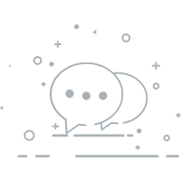

{{ news.title }}
{{ author.user_name }}
{{ news.timestamp | time }}
全部评论({{ news.comments }})
{{ el.user_nickname }}
{{ el.like_number }}
{{ el.comment }}
{{ el.timestamp | interval-time }}
{{ ans.user_nickname }}:
{{ ans.user_nickname }}
回复
{{ ans.listen_nickname }}:
{{ ans.answer }}
我们需要您的神评论
-- 没有更多了 --